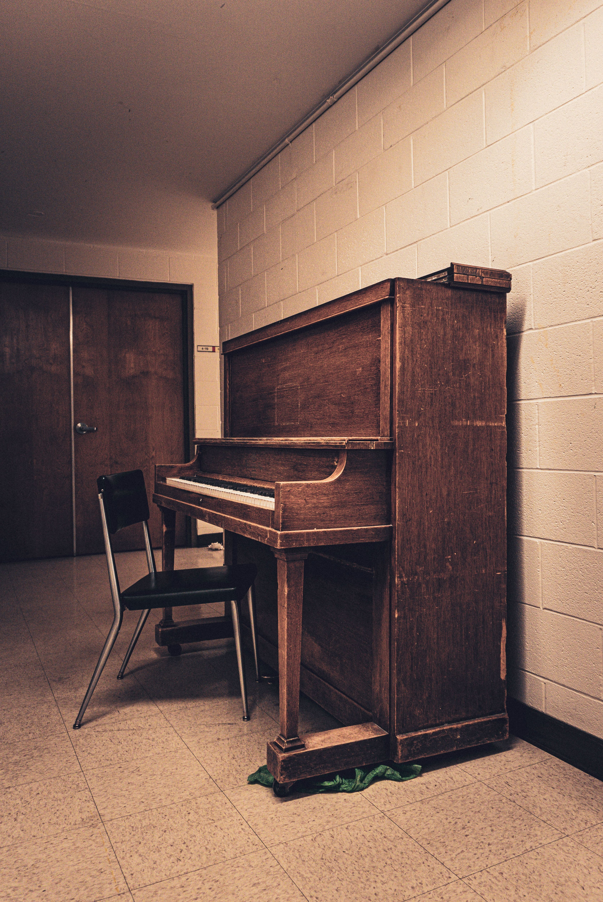

Conhecendo o piano
Descubra como funciona o piano, conheça suas teclas e aprenda os primeiros passos para começar a tocar.

1. O que é o piano?
O piano é um instrumento musical de teclas muito utilizado em diversos estilos musicais, como música clássica , pop, jazz e trilhas sonoras. Ele permite tocar melodias , acordes e várias notas ao mesmo tempo. No piano acústico, quando uma tecla é pressionada, um mecanismo aciona um martelo que bate em uma corda , produzindo o som. Já o piano digital utiliza recursos eletrônicos para reproduzir o som do instrumento. O piano é um instrumento musical de teclas que produz som por meio de martelos que atingem cordas internas. Quando uma tecla é pressionada, um mecanismo movimenta o martelo correspondente, fazendo a corda vibrar. O piano possui teclas brancas e pretas, organizadas em uma sequência de notas musicais. Ele permite tocar melodias, acordes e várias notas simultaneamente, sendo muito utilizado tanto para apresentações solo quanto para acompanhar outros instrumentos.
2. Conhecendo as partes do piano
Para começar a aprender, é importante conhecer algumas das principais partes do instrumento:
- Teclas brancas: representam as notas naturais, como Dó, Ré, Mi, Fá, Sol, Lá e Si.
- Teclas pretas: representam notas alteradas, chamadas sustenidos ou bemóis, dependendo do contexto musical.
- Pedais: ajudam a modificar o som. O pedal de sustentação, por exemplo, permite que as notas continuem soando mesmo depois que as teclas são soltas.
- Teclado: conjunto de teclas organizadas da região grave até a região aguda.
- Martelos e cordas: presentes no piano acústico, participam do mecanismo responsável pela produção do som.
3. Conhecendo as notas musicais
As sete notas musicais naturais são Dó, Ré, Mi, Fá,Sol, Lá e Si. Depois de Si, a sequência recomeça em Dó, em uma região mais aguda. No teclado, as teclas pretas aparecem em grupos de duas e três. Esses grupos ajudam a localizar as notas.Por exemplo, a tecla branca imediatamente à esquerda de um grupo de duas teclas pretas é o Dó.
4. Como começar a aprender piano?
Comece aprendendo a posição correta das mãos e a identificar as notas no teclado. Depois, pratique pequenas sequências musicais utilizando primeiro uma mão e, aos poucos, as duas mãos. Também é útil aprender a ler partituras ou cifras, desenvolver o ritmo e praticar músicas simples. Estude em sessões regulares e aumente a dificuldade gradualmente, respeitando seu próprio ritmo. Dica para iniciantes: aprenda a identificar as notas Dó, Ré, Mi, Fá, Sol, Lá e Si no teclado. Em seguida, pratique escalas, acordes básicos e exercícios de coordenação entre as mãos.
- Identifique as notas Dó, Ré, Mi, Fá, Sol, Lá e Si.
- Pratique escalas simples lentamente.
- Treine a coordenação entre as mãos.
- Aprenda melodias curtas e músicas de que você gosta.
- Mantenha uma postura confortável ao tocar.
5. Curiosidades sobre o piano
- O piano pode acompanhar outros instrumentos ou ser utilizado em apresentações solo.
- A intensidade do som de um piano acústico pode variar conforme a força com que a tecla é pressionada.
- Existem pianos acústicos de cauda e verticais, além de diversos modelos digitais.
- O piano é muito utilizado para estudar harmonia, melodias e teoria musical.